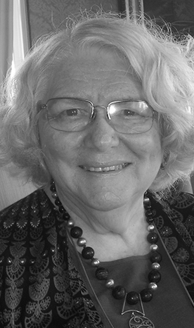
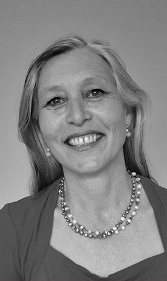

We have worked with many people and organisations over 20 years to create and implement their own game changing solutions using the SynNovation approach.
Contact us +27 82 452 0341
Our Team
Synnovation is a team of like-minded, independent
Innovation Catalysts
who facilitate creative change management processes for organisations and companies

We are catalysts for creativity and innovation. Our team, our ways of working and our processes enable people to access their untapped creative genius, and apply it to their current world to get fresh perspectives and solutions to problems or challenges.
We use our recipe, with your ingredients to amplify critical and analytical thinking skills and combine them with creative thinking skills – in the right mix and right time, for the best results.
We use creativity to supercharge critical and analytical thinking to uncover fresh solutions and implement new ideas. It's the kind of thinking that makes people more energised, positive, adaptive and resilient for change. The power of the approach is that it simultaneously addresses creativity, novel strategies, behavioural and people issues, and focussed innovation to deliver practical implementation.
Our team
Truida Prekel
“The more people work with the SynNovation tools, ground-rules and behaviours, the more they become a way of life, a set of positive habits that enrich them, and also benefit others they meet.”
Truida is a founding director of SynNovation Solutions.
Building understanding and positive approaches to human interactions underly all the areas Truida has worked in for over forty years – people development, creative problem-solving, innovation and change management, and also intercultural understanding, gender and inclusivity.
Truida has had the benefit of playing and working with SynNovation since 1995 – yet she still regularly gains new insights on different ways in which we can use and strengthen the approach – often from participants. She loves sharing SynNovation with people of all ages, professions and backgrounds – and seeing how it unlocks productive fun, energy and excitement for them and for our team. She has worked in businesses of various sizes, government departments, in education and in communities.
Truida was at UNISA Graduate School of Business Leadership for 17 years, first as manager of marketing and public relations, then lecturing in management for ten years. An independent consultant since 1988, she has published widely and guest-lectured at several universities. She pioneered work on developing the management potential of South African women since the 1970s.
She has played an active role in transformation in South Africa, with past board appointments including the National Skills Authority, the National Training Board, the Services SETA, Sanlam Employee Benefits Transformation Board, the SARS Advisory Board, the TCTA (Trans-Caledon Tunnel Authority – Lesotho Highlands Water Project), Project Literacy, the Agri Academy, and various women’s and community organisations. Truida holds a BA from Stellenbosch University and a Master of Business Leadership from UNISA. She is a proud recipient of the SBL Board Gold Medal as best MBL student.
Muimeleli Mutangwa

“As an engineer with strong analytical problem-solving capabilities, SynNovation’s tools allow me to also effectively solve problem that require creative solutions. This skillset widens what I’m able to achieve personally and professionally.”
Muimeleli is the Managing Director of Synnovation Solutions. He is a Business Process Practitioner who is passionate about assisting emerging enterprises to become more efficient and sustainable by designing, re-engineering and optimising their business processes.
His national best-selling book, Before Varsity won the 2019 African Authors’ Award and the 2019 Gauteng Province Premier’s Education Excellence Award in the Skills Development category. He is also a founder of two small businesses: Tailor Cleanik; a chemical technology company that develops environmentally-friendly detergents and makes cleaning franchises available to unemployed youth; and Ink Matter; a company that publishes youth empowerment books by emerging authors and distributes them by partnering with organisations through youth empowerment programs.
Muimeleli was first introduced to SynNovation through one of his mentees, Farisani Ramabulana. The SynNovation approach was a natural fit for Muimeleli and after attending a number of SynNovation programmes, he trained to become a facilitator. Muimeleli is an engaging SynNovation practitioner and innovation catalyst, with experience across multiple industries, from start-ups to academia and the not-for-profit sector. Muimeleli Mutangwa completed his Masters in Sustainable Process Engineering at Wits University. in 2018.
Lu-Marie Sobey
“With creativity, work can be more fun than fun!”
Lu-Marie Sobey is a founding director of SynNovation Solutions and has been an independent consultant and trainer in management systems and innovation since 1995, all requiring change in mindsets. SynNovation is central to all she does, it has become a way of doing, a way of life and the way to relate to others. She is attracted to how innovative thinking can supercharge the concept of continuous improvement. It has proven to be much deeper than that; it subtly changes what people do, and how they behave and work together.
With a BSc Food science, she started her career in Nampak’s Research laboratories, the biggest packaging company in the southern hemisphere and then moved to SGS where she was account manager overseeing quality of the entire house brand of a major retailer. She worked actively in the South African food industry until relocating to Australia. Her major clients included the Coca-Cola company and Extrupet Phoenix.
In addition to her analytical scientific streak she has a strong creative side. When introduced to Synectics (a well-known process for creative problem-solving and innovation) in 1996, she immediately took to it, seeing many opportunities to use it as a powerful way to achieve breakthroughs with continuous improvement, innovation and change.
In 2000, she co-founded SynNovation Solutions, a consortium for innovation, creativity, collaboration and change. She passionately helps people discover their own creativity and help teams find new solutions to old problems along with a new way of working and relating. These sessions always leave clients energised and they can’t believe they had achieved so much, while having so much fun.
Her versatility and wide interests, resulted in a wide range of clients including universities, the food industry, pharma, retail, the mining industry and actuaries. She is a sought-after trainer, who was head hunted to deliver training for Duke Corporate Education, consistently ranked top management training for over 2 decades. To better understand creative thinking, she completed an international Diploma in Neuroleadership (cum Laude) at University Stellenbosch Business School. She is passionate about sharing her knowledge and regularly presents at conferences and contributes to published articles and books.
She is married to Andrew, and engineer and has twin boys also studying engineering. t it simultaneously addresses creativity, novel strategies, behavioural and people issues, and focussed innovation to deliver practical implementation.
Brian Ford

“SynNovation makes it possible for me to bring my business and management experience together with my creativity, to work every day. This makes the daily grind very rewarding. ”
Brian Ford is a director of SynNovation. He is an entrepreneur, with valuable experience in executive and general management, business development and project management.
After more than 25 years’ experience in the IT industry, predominantly in the Financial Services sector, Brian has joined the SynNovation team, mainly because of his fascination with innovation, and its power as a competitive advantage. While working on a PhD on this topic, he is also working with the team to expand the impact of SynNovation, to enhance performance in business, in government and in communities.
Brian holds a BCom (Hons) from the University of the Western Cape and an MBA from the University of Cape Town (Graduate School of Business).
Melanie Burke

“SynNovation connects us with our humanity and creativity, enabling us to form robust relationships and enhancing our collaborative and individual productivity.”
Melanie Burke is an award-winning social innovator and an experienced development practitioner who brings together the academic and practical knowledge required for impact entrepreneurship and societal change.
A former banker, Melanie has some 30 years' experience in the financial services and innovation fields and has expertise in most areas of business. Melanie is recognised for her impact in diversity and inclusion work and currently focuses on transformation and innovative solutions for social development, growth and business support.
While retaining her independence, she is associated with several other organisations where she brings to bear her expertise regarding Leadership Development, Team Building, Cross-sector and Intra-sector Collaboration, Innovation, Technology, Education, Large-scale Systems Change and Entrepreneurship. She has held leadership roles as the Chairman of the Fleur du Cap Theatre Awards, Founding Director of the Museum of Design Innovation Leadership and Art (MODiLA), Senior Programme Director of Common Purpose SA and is currently the Chairman of Symphonia for South Africa as well as StreetSmart South Africa.
She is sought-after locally and internationally as a facilitator, public speaker, MC and Programme Director of intimate as well as very large events. Her discretion and sensitivity to the context in which she operates, is part of her appeal.
Her formal academic qualifications include an international Master of Business Administration (MBA) with an Information Technology specialisation as well as a Diversity Management Diploma from Wits Graduate School of Public Development Management and Project Management and Marketing diplomas from UNISA. She has been associated with SynNovation since 2008.
Melanie loves books, travel, her family, friends and enjoys spending time with them in South Africa, Spain and England.
Helen Andrews

“SynNovation has shown time and again that in assuming the best of people, they are likely to deliver on those expectations. Our ways of working deliver what I like to think of as an ‘optimistic realism! I appreciate the techniques that help to select ideas and show how to practically bring them to life.”
Helen is passionate about the power of collaboration to shift group dynamics, unlock fresh thinking and drive innovation within organisations. With a background in design, Helen is intuitive, resourceful and naturally creative. Having started her career working for Synectics Europe in 2008, her professional approach is grounded in the principles of collaborative creativity. She has since applied those skills across a diverse set of industries as a trainer, facilitator, researcher, and consultant.
Helen has run projects both locally and internationally, working with client teams to uncover and develop innovation opportunities across a diverse range of industries ranging from finance to food and beverage to the automotive sector. Her recent focus has been in new product strategy, grounded in consumer insight.
Currently an independent consultant, Helen is an associate of SynNovation and is dedicated to inspiring people and organisations to harness insights and unlock creativity to uncover breakthrough solutions.
Helen loves exploring new cities, as well as taking in all the beauty that her hometown of Cape Town has to offer.
Albertus Louw

“SynNovation enables me to use the lenses through which others and I see our worlds, to create collaborative solutions to real-world problems.”
Albertus Louw is a film maker, TV presenter and independent consultant specialising in the fields of creativity, media as well as eco- and socially aligned solutions. His association with SynNovation started in 2007 at a workshop for NGO’s involved in relief efforts after the South-East Asia tsunami.
He is an esteemed producer/director, known for his stories about wildlife, especially relating to human relationships with the environment and solutions for the future. He is also often seen on national TV as studio- and field presenter for 50|50, a well-known South African environmental TV-show. He has received several accolades, including an SAB Environmental Media award, ATKV Mediaveertjie and International Tourism Film Festival Africa award.
Albertus has been involved with relief work in war-torn Northern Iraq and Sudan as well as at major natural disasters in Turkey, Iran and Indonesia.
He facilitates exercises on cultural orientation and sensitivity to various groups. As a youth worker, he organised cross-cultural and service projects for young people in the UK, Europe, the Far East, Central Asia, the Middle-East as well as North and Southern Africa.
Albertus believes education is key to enabling people to think differently about our connection with the environment and that stories about innovative solutions, are one of the best ways to inspire change.
He lives in the Magaliesberg region, where he is pursuing a lifestyle inspired by Circular Economy and Cradle to Cradle principles.
Angela Ho

“While the new digital world and transformative technologies drive the way people work, the SynNovation principles of teamwork are critical to sustaining success.”
Angela's wide range of business and facilitation experience makes her an asset to the SynNovation team. A major part of Angela's career was with The Coca-Cola Company. Twelve years of global corporate experience included roles from Key Account Management, to Supply Chain Management (route-to-market strategies), to Public Affairs and Communications in Africa including Uganda, Kenya, Tanzania, Mozambique, Zimbabwe, Namibia and South Africa. Angela's exposure to various facets of business has allowed her to appreciate the value of clear and consistent communication.
A career break to prioritise her three daughters, offered experiences that have enriched her view of life and her value system of perseverance, respect, humility, integrity and humour in abundance.
Angela holds a BCom in Marketing and Entrepreneurship from the University of South Africa (UNISA); HIV/AIDS Counselling Certification; a Diploma in Project Management; and Performing Arts qualifications in Harp and Piano. Since 2015, Angela has been a Director of a South African home-grown software company.
The SynNovation ground rules and mind-set have changed how she thinks and speaks, and have opened opportunities for a new career in IT.
Today, SynNovation allows her to find joy in her everyday work, finding solutions in a collaborative and fun way, using creative problem-solving.
YOU'RE IN GOOD COMPANY
Creativity is Intelligence having fun
– Albert Einstein
South Africa, Johannesburg
Muimemeli Mutangawa
+27 72 895 0341
Muimemeli.Mutangawa@synnovation.co.za